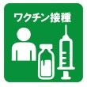

それぞれのタブをタップしてください。
コロナ感染
ワクチン接種
接種予約
新型コロナウイルスに関する情報
【新型コロナウイルスに関する情報】
8/7（日)、新たに１３名の新規感染が確認されました。
10代男性1名
10代女性1名
20代男性2名
20代女性1名
30代女性2名
40代男性2名
40代女性1名
60代男性1名
70代女性1名
90歳以上男性1名
感染拡大が続いています。１週間あたりの感染者は１６２名です。
県内では９３８名の新規感染、また置賜では１９０名、
米沢市124名
長井市19名
南陽市13名
高畠町13名
川西町16名
小国町5名
の新規感染が確認されました。
■不織布マスクの着用やこまめな手洗い、消毒、三密の回避、外出や会食、仕事、学校生活に係る感染拡大防止にご協力をお願いします。
■少しでも体調が悪ければ、早めにかかりつけ医を受診することを心掛け、マスクの着用やこまめな手洗い、手指消毒を徹底し、特に「三つの密」を避け、人と人との距離を確保していただきますようお願いします。
■新型コロナウイルスは誰もが感染する可能性があります。根拠のない情報や誹謗中傷などの行為は厳に慎んでください。
■新型コロナの感染に対する情報の発信は、情報を必要な方にだけ送るセグメント配信でお知らせしています。ご希望の方は登録をお願いします。
登録の方法は、「コロナ配信希望」とメッセージを送るか、
次のURL▶
https://bit.ly/3pJVs1D
をタップしてメッセージを送ってください
新型コロナワクチン接種に関する情報
ワクチンの接種は、新型コロナウイルス感染症の発症を予防し、症状が深刻になるリスクをできる限り減らし、結果として新型コロナウイルス感染症のまん延の防止を図ることを目的としています。
■
新型コロナワクチンに関するお知らせ
■
新型コロナワクチンについてＱ＆Ａ
■
ワクチンの予約についてＱ＆Ａ
■
ワクチンの接種当日についてＱ＆Ａ

▲タップすると移動します
ワクチン接種予約
※新たに友達登録が必要です。
※2/1(火)から、LINE予約・WEB予約が出来ます
■ワクチン接種のキャンセル待ち登録
■ワクチン接種の予約ついてＱ＆Ａ
ワクチン接種予約情報を配信
■新型コロナのワクチン接種に関する情報の発信は、情報を必要な方にだけ送るセグメント配信でお知らせします。ご希望の方は登録をお願いします。
登録の方法は、「ワクチン配信希望」とメッセージを送るか、
次のURL▶
https://bit.ly/3qqtyI9
をタップしてメッセージを送ってください